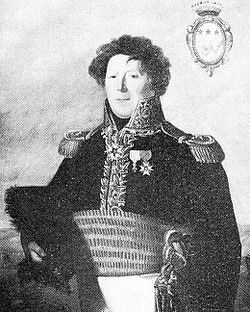

Présentation Préfecture Chabran Vaucluse

Tout d'abord, un peu d'histoire.
En 1906, le 7ème Régiment du Génie, créé en 1894 commence à quitter la caserne Hautpoul (actuelle Cité Administrative), pour prendre place à la caserne Chabran.

Sa construction, sur demande de la ville commença 2 ans plus tôt, en dehors des remparts, au 28 boulevard Limbert, et est édifiée sur le modèle établi après la guerre de 1870, selon l’architecture typique de la 3e république.
Elle est constituée de 3 bâtiments principaux organisés en U et tournés en direction des remparts.
Elle prend le nom de caserne Chabran en l’honneur du général Joseph Chabran, né à Cavaillon en 1763 et mort en 1843 à Avignon, général de la Révolution et de l’Empire. Son nom est gravé sur l’Arc de Triomphe.
En quelques chiffre la caserne c’est : 230 officiers, 12000 hommes, 3000 chevaux, 550 voitures.
Transformation
Elle conserve la mémoire du passé : la façade, de 10000 m² qui donne sur la place d’Armes ; tout en affichant la modernité.
Une « architecture à plat » avec traitement graphique du sol s’appuie sur les lignes structurantes des bâtiments existants. Les enjeux environnementaux sont respectés : intégration urbaine, gestion de l’énergie, insertion paysagère.
La place d’Armes est aménagée en jardin arboré.
Le coût total des travaux s’élève à 15,2 millions d’euros. Et accueille aujourd'hui :
- Bâtiment A : Direction des Relations avec les Usagers et les Collectivités Territoriales
- Bâtiment B : Direction des Moyens et de la Coordination des Politiques de l’Etat
- Bâtiment C : Université d’Avignon et des pays du Vaucluse (formation continue )